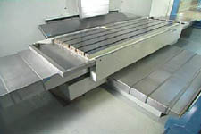
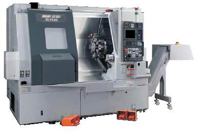
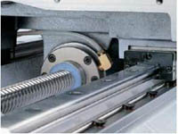
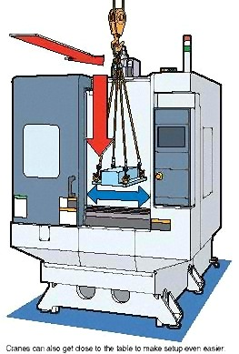
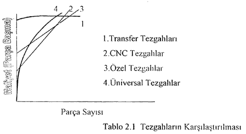

|
3.3
Tezgah gövdeleri

Þekil
3.4 Tezgahýn rijitliði ve tablanýn hareketleri |
Tezgah tipine göre, tezgah gövdeleri birbirinden oldukça farklýdýr.
Ancak bir genelleþtirme yapýlýrsa tezgahlarýn gövdesi, banko
ve kolon'lardan meydana gelir. Banko tezgahýn bulunduðu zemine
göre yatay; kolon bu zemine göre dikey vaziyette bulunan gövde
kýsmýdýr. Buna göre bazý tezgahlar örneðin torna, sadece bankodan
(Þekil 3.4); bazýlarý örneðin freze sadece kolondan meydana
gelirler. Tezgah gövdeleri; yüksek rijitliðe ve kütleleri
azaltmak için hafif konstrüksiyona sahip olmalarý; baþka bir
deyiþle rijitlik / kütle oraný yüksek olmasý gerekir. Ayrýca
malzeme seçiminde sönümleme özelliði de dikkate alýnýr. Rijitlik/kütle
oraný üzerinde yapýlan teorik ve deneysel incelemelere göre,
bu bakýmdan en uygun kesitin içi boþ kesit olduðu anlaþýlmýþtýr.
Boþ kesitler eðilme
ve burulma gibi zorlamalarda, kesitteki gerilmelerin daðýlýmým
eþitlemekle beraber eylemsizlik momentim de artýrýrlar. Ancak
bu durumda elemanýn dýþ boyutu da artar. Boþ kesitli elemanlarýn
rijitliklerini artýrmak için kaburgalar veya özel þekillendirmeler
yerleþtirilir. Gövdelerin burulma rijitliði, gövdeyi oluþturan
kýsýmlarýn birbirine baðlama þekline baðlýdýr. Genellikle
cývatalarla ön gerilme þeklinde yapýlan bu baðlamalar, bir
yandan veya iki yandan olabilir. Genelde iki yandan yapýlan
baðlama, burulma rijitliðini arttýrýr. Tezgahlarýn rijitliði,
tasarým sýrasýnda günümüzde geliþtirilmiþ bir hesap yöntemi
olan sonlu elemanlar yöntemi ile kontrol edilir (Þekil 3.5).

Þekil
3.5. CNC Torna tezgahý
3.4
Hareket iletim elemanlarý
CNC tezgahlarýnda kullanýlan iletim elemanlarý vida
mekanizmasý, diþli çarklar, diþli kayýþ kasnak mekanizmasý,
kaplin veya kavrama gibi elemanlardýr. Bu elemanlarýn konstrüksiyonunda:
yüksek rijitlik, minimum boþluk, düþük sürtünme ve yüksek
verim gibi faktörler dikkate alýnmalýdýr.
Ýletim
elemanlarýnýn en önemlisi vida mekanizmasýdýr. Bu elemanlardan
istenilen; yüksek rijitlik, düþük sürtünme, yüksek verim,
helis açýþý 3...4° gibi faktörler, konvansiyonel tezgahlarda
kullanýlan normal trapez vida ile
karþýlanamaz. Bu nedenle CNC tezgahlarda bilyalý vida mekanizmasý
kullanýlmaktadýr (Þekil 3.6). Bu elemanlarýn rijitliði çok
yüksek olmakla beraber, sürtünmesi çok düþük ve verimi çok
yüksektir. Ayrýca vida ile somun arasýndaki boþluklar kolayca
ayarlanabilir ve bir ara bilezikle, rijitliði
büyüten ön gerilmeli hale getirilebilir.
|
Þekil
3.6 baðlantý elemanlarý
|

Þekil
3.7 |
3.5
Yataklar ve kýzaklar
Kýzak yolarý ve yataklar tezgahýn hareketli elemanlarým desteklemekle
beraber, bunlarýn belirli bir doðrultuda hareket etmelerin!
saðlarlar. Kýzak yollarý, destekledikleri kýzaklarýn bir tek
doðrusal yönde hareket etmelerim saðlarlar (Þekil 3.6). Yataklar
destekledikleri millerin sadece kendi eksenleri etrafýnda
dönmelerim saðlarlar. Pek tabi ki hem dönme hem de doðrusal
hareket imkaný saðlayan kýzak- yatak sistemleri de vardýr.
Yataklar ve kýzaklar çalýþma ilkesi bakýmýndan (Þekil 3.7);
kaymalý ve yuvarlanmalý olmak üzere iki gruba ayrýlýrlar.
Yuvarlanmalý yataklara rulman da denilir.
Yatak
ve kýzaklarda meydana gelen en önemli olay sürtünmedir. Sürtünme
bu elemanlarda: aþýnma, enerji kaybý ve sýcaklýðýnýn yükselmesine
neden olur. Bu bakýmdan sürtünmeyi ve onun neden olduðu menfi
olaylarý azaltmak için yatak ve kýzaklar yaðlanýr. Yaðlama
bakýmýndan yatak ve kýzaklar kuru, sýnýr, hidrodinamik (a),
hidrostatik sývý (b), hidrostatik hava (c) olabilirler. Yüzeylerin
arasýnda yað bulunmayan sürtünme hali olarak açýklanan kuru
sürtünme, büyük konum hatalarý, dinamik karasýzlýk, enerji
kaybý aþýnma meydana getirir. Bu nedenle CNC sistemlerde kuru
sürtünme halinde çalýþan yatak ve kýzaklar kullanýlmaz. Sýnýr
sürtünmesi, yüzeylerin arasýnda yað bulunmasýna raðmen sývý
sürtünmenin meydana gelmediði sürtünme halidir; burada önemli
olan yaðýn yapýþma kabiliyetidir. Sývý sürtünmesi yüzeylerin
tamamen bir yað tabakasý tarafýndan ayrýldýðý ve sürtünmenin
yað molekülleri arasýnda meydana geldiði sürtünme halidir.
Sývý sürtünme hidrodinamik ve hidrostatik olmak üzere iki
gruba ayrýlýr. Hidrodinamik sývý sürtünmede yüzeyleri ayýrtan
yað tabakasý, yüzeyler arasýnda kama þeklinde bir boþluk olduðu
durumda, belirli bir izafi hýzda kendiliðinden oluþur. Mil
yataða göre eksantrik bir konum alýr (Þekil 3.7). Bu nedenle
bu sistemler CNC tezgahlarýnda kullanýlmaz. Hidrostatik sývý
sürtünmesinde yað tabakasý, sistemin dýþýnda bulunan yüksek
basýnçlý bir yað pompasý ile oluþturulur. Özetlenirse tezgahlarda;
- Yataklar:
hidrostatik sývý ve yuvarlanmalý;
- Kýzaklar:
sýnýr, yuvarlanmalý ve ender hidrostatik sývý þeklinde kullanýlýrlar.
4-
CNC TEZGAHLARIN ÜNÝVERSAL TEZGAHLARLA KARÞILAÞTIRILMASI
4.1.
CNC Tezgahlarýn Geliþtirilmesinin Amaçlarý
- Üretimin
hýzýnýn artýrýlarak birim maliyetinin azaltýlmasý.
- Þekil
ve ölçü zorluðu olan, çok iþlem gerektiren parçalarýn üretiminin
kolaylýkla yapýlabilmesi.
- Seri
imalat parçalarýnýn þekil ve ölçü hassasiyetinin bozulmasý
ve kolayca kontrol edilebilmesi.
- Klasik
yöntemlerle iþlenmesi mümkün olmayan parçalarýn üretiminin
yapýlmasý.
4.2.
CNC Tezgahlarýn Avantajlarý
- Verimliliði
arttýrýr.
- Ýþlenen
parçalarýn ölçü ve þekil tamlýðý yüksektir. Bu nedenle bozuk
parça sayýþý çok düþüktür ve kalite kontrolü kolaydýr.
- Özel
takým ve iþ baðlama aparatlarýna duyulan ihtiyaç azdýr.
Bu nedenle takým ve aparat stoklama sorunu azdýr. Ölü yatýrýmlarýn
maliyetleri düþüktür.
- CNC
Tezgahlarda çok sayýda iþlem ayný anda (bir baðlamada) yapýlabileceðinden
tezgahlar arasýndaki iþ parçasý akýþý azdýr.
- Ýþlem
süreleri sabit olduðundan, üretim takibi yapmak, planlamak,
denetlemek ve önceden zaman tespiti yapmak (elle veya bilgisayarla
programlama imkaný ile) mümkündür. Bu da imalat seçeneklerinin
tespit edilebilmesi ve üretim planlamasýyla iþ parçasýnýn
iþlem maliyetinin belirlenme kolaylýðým saðlar.
- Programdaki
esneklikler ve çabuk müdahalelerle dizayn deðiþiklikleri
(ölçü-þekil) oldukça hýzlý ve kolay olacaktýr.
4.3
CNC Tezgahlarýn Dezavantajlarý
- Ýlk
yatýrým ve iþletme maliyeti yüksektir.
- Tezgah
programcý ve kullanýcýlarýn özel eðitim görmeleri gerekmektedir.
- Elektrik
ve elektronik donanýmlarýnýn bakým-onarým maliyeti yüksektir
ve bu tür iþlemler için kalifiye personel gerekmektedir.
- Kesici
takýmlarýn seçilmesi kesme þartlarýnýn belirlenmesi, magazine
yerleþtirilmesi, ölçülerin tespiti çok daha fazla dikkat
ister.
- Teknik
resimlerin hazýrlanmasý ve kalite kontrol aþamalarýnýn tespiti
bu tezgahlarýn özelliklerine göre yapýlmasý gerekir.
- Yukarýda
verilen bilgiler doðrultusunda CNC Tezgahlarýn her uygulama
için doðru ve ekonomik olmayacaðý açýktýr.

Bu
durum yukarýdaki
grafikten de anlaþýlabilir. Basit ve az sayýdaki parça imalatý
çoðu zaman üniversal tezgahlarda daha ucuz ve kolay yapýlabilir.
Ancak çok ince ayrýntýlarý olan, þekil ve ölçü hassasiyeti
yüksek parçalarýn imalatý sayýlarý azda olsa CNC Tezgahlarda
daha ucuz ve hýzlý yapýlabilir. CNC Tezgahlarda programlama
bittikten ve imalat için gerekli olan hazýrlýklar sonra parça
baþýna düþen iþlem süresi oldukça kýsadýr.
CNC tezgahlarda imalat adedi çok yüksektir. Kesme hýzlarý
ayarlandýðýnda ve iþlem sýrasýnda sabit kaldýðýndan dolayý
takým ömürleri genelde daha uzundur. CNC tezgahlarda bir çok
iþlem birden yapýlabildiði için birkaç klasik tezgah yerine
kullanýlabilir.
|